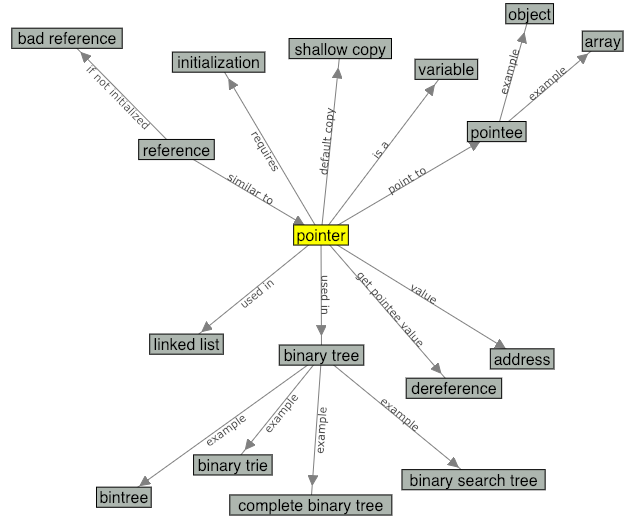

This is a still image of the concept map for the term
"pointers". You can check the actual concept map on the
glossary page.

Which of the following is FALSE about references?
Look at these terms on the concept map.